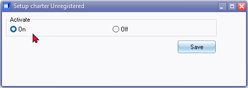
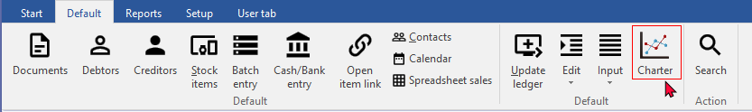
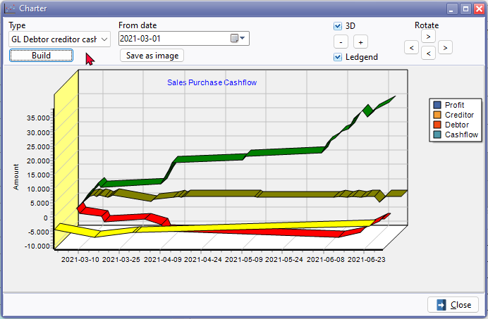
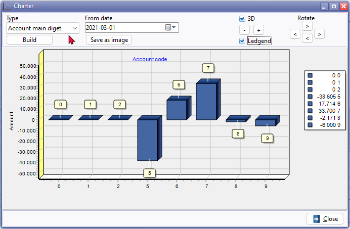

Charter plugin
Charter plugin
|
Charter Plugin - Manual - Shop - Licence : Once-off Documentation : Help documentation |
Unlock powerful visualization capabilities with our Charter plugin. Seamlessly generate insightful charts and graphs directly from your Set of Books data, empowering you to make informed decisions and communicate key insights effectively. Save charts as image files for integration into documents, presentations, spreadsheets, and more.
The Charter Plugin enhances your experience by adding a Charter tab on the Debtor accounts, Creditor accounts, and Stock items. This allows you to build and customise charts effortlessly. Within the Debtors grid, Creditors grid, and Stock item grid, simply right-click to launch the "Charter" screen from the Plugin action → Charter context menu.
In the Documents grid, you can also access the "Charter" screen by right-clicking and selecting the Plugin action → Charter context menu. This feature enables you to launch the "Doc value" or "Debtors" charts. Additionally, in document entry screens for both posted and unposted sales documents such as invoices, credit notes, quotes, purchases, supplier returns, and orders, an icon will be available to launch the "Charter" screen.
Furthermore, the "Charter" plugin seamlessly integrates with other plugins supporting the "Charter" functionality.
Activate the Charter plugin
To launch the Charter:
- On the Setup ribbon, select Plugins → Financial tools → Charter. If this plugin is not listed under Plugins → Financial tools, activate it via Tools → Activate plugins.
|
|
If the Charter plugin is not available from the Plug-ins → Financial tools → Charter menu, you need to Activate the Charter plugin. To do this go to the Tools → Activate plugins on the Setup ribbon. |


|
|
When you reopen the Set of Books, the Charter icon will be added to the Default ribbon. This will only be added for the active (opened) Set of Books.  |

- When you reopen the Set of Books, the "Charter" plugin can be accessed on the Default ribbon.
Launch the Charter plugin (Default ribbon)
To launch the Charter:
- On the Default ribbon, select the Charter icon.

- Type - Select the following report types:
- GL Debtor creditor cashflow
- Account main digit
- Date from - Select the date from.
- Click on the Build button. The chart will be generated. You may adjust the looks and layout of the chart using the following options:
- 3D - Selected (ticked) it will display the chart in a 3 dimensional view. If not selected (not ticked), it will display the Chart in a 2D (2 dimensional) view.
- Size - Decrease the size by clicking on the minus button or increase the size by clicking on the plus button.
- Legend - The legend is by default displayed. You may deselect it (remove the tick) to hide the legend.
- Rotate - There are four buttons, which may be used to change or set the angles of the chart.
- Once you are happy with your layout, you may click on the Save as image button. This will save the chart as an image in the following two (2) file types:
- Bitmap file (*.bmp)
- Paintbrush Picture (*.wmf).
- Click on the Close button to exit (close) the Charter screen.
GL Debtor creditor cashflow
This chart type will display the totals of your sales and purchases.
Sales / Purchase cash flow: Profit , debtor (sales) and creditor (purchases) and cash flow in one graph.
Account main digit
Main accounts: Totals per account

Launch the Charter plugin (Charter tabs)
In addition to the Chart icon on the Default ribbon, the Charter plugin, will add a Charter tab on the Debtor accounts, Creditor accounts and Stock items from where you may build and customise charts.
Within the Debtors grid, Creditors grid and Stock item grid, you may right-click to launch the "Charter" screen from the on the Plugin action → Charter context menu.
Within the Documents grid - You may right-click to launch the "Charter" screen from the on the Plugin action → Charter context menu to launch the "Doc value" or "Debtors" chart. In the document entry screen for posted and unposted sales documents such as invoices, credit notes and quotes as well as purchase documents such as purchases, supplier returns and orders, an icon will be available to launch the "Charter" screen.
Charter Plugin integration
The "Charter" plugin is also available in other plugins in supporting the "Charter" plugin.
Debtors - Charter tab
Debtors
Context menu access: From the Debtors item grid, similar charts may be generated on the Plugin action → Charter context menu for a selected debtor (customer / client) account.
Creditors - Charter tab
Creditors
Creditor detail
Creditor Group current value
Context menu access: From the Creditors item grid, similar charts may be generated on the Plugin action → Charter context menu for a selected creditor (supplier / vendor) account.
Stock - Charter tab
Stock value
Stock Days
Stock Sales
Creditor Group current value
Creditor
Creditor detail
Context menu access: From the Stock item grid, Similar charts may be generated on the Plugin action → Charter context menu for a selected stock item
Documents - Plugin action - Charter
Doc value
Debtor (Note on Sales documents such as Invoices, credit notes and quotes this is option displays charts. On purchase documents such as purchases, supplier returns and orders the charts does not display any detail in charts.
Charter Plugin integration
The "Charter" plugin is also available in other plugins in supporting the "Charter" plugin.
Other Graph features in osFinancials5
In addition to the charts generated by the Charter plugin, you have the flexibility to produce your own graphs using various tools within osFinancials:
- Ledger analyser - Export data to Comma Separated Value files (*.csv) and build your own charts (graphs) from exported data in your favourite spreadsheet program.
- Documents - Graphs - Search filter, and customise your views for each document type according to your needs, and use the Graphs option to visualise your sales documents (Invoices, ,Point-of-Sales invoices, Credit notes and Quotes) and your purchase documents (Purchases, Supplier returns and Orders).
- Drill Down plugin - Charts of your Sales per day and Quantities per day. You may also filter and export other data and build your own charts (graphs) in spreadsheets.
- Reports - Graphs - Graphs per week and Graphs per month.